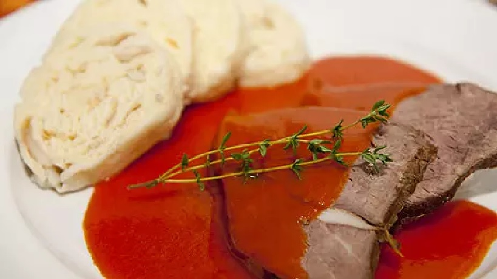

Recept na Rajskou

Postup:
Krok 1:
Maso prošpikujte slaninou a dejte vařit do osolené vody s divokým kořením.
Vařte doměka a vývar neustále dolévejte, aby vám zbylo asi 800 ml.
Krok 2:
V hrnci rozpusťte máslo a dejte do něj najemno nakrájenou cibuli, očištěnou nakrájenou mrkev, celer, petržel a restujte dorůžova.
Poté přidejte cukr a nechte zkaramelizovat.
Dále přidejte mouku, protlak, kečup a zalijte scezeným vývarem.
Důkladně rozšlehejte, přidejte skořici a nechte pozvolna vařit asi 20 minut.
Již skoro hotovou omáčku ochuťte cukrem a solí, popřípadě citronovou šťávou.
Podávejte s houskovým knedlíkem.
Ingredience:
600g Zadního hovězího
50g Slaniny
1 Cibule
1 Mrkev
1 Čtvrtka celeru
1 Petržel
100 g másla
6 Kuliček celého černého pepře
3 Bobkové listy
4 Kuličky celého nového koření
3 Lžíce hladké mouky
200g Rajčatového protlaku
200g Kečupu
Sůl
Cukr
Mletá skořice
1ks Citrón